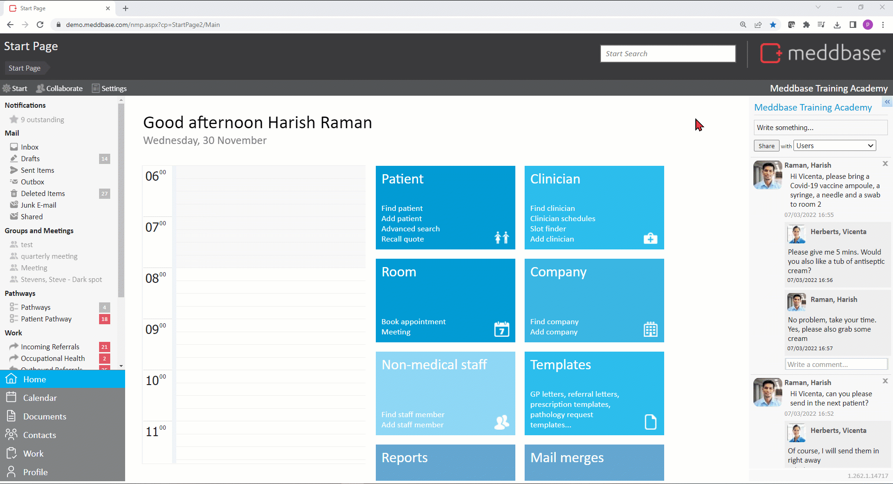
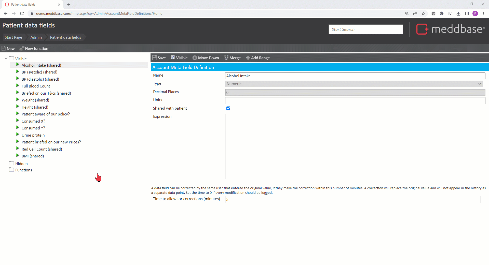
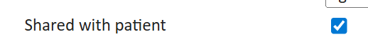
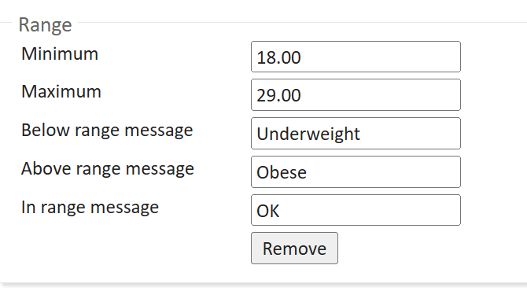
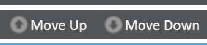

Meddbase provides an option to create custom Patient Data Fields. These fields allow you to record raw data on a consultation form in either of the 2 below formats:
This article describes:
Patient Data Fields can take one of three types:
A number of meta fields will be included in your standard chamber set up, however, by default these are hidden from the form.
To make these visible:-

You can create new meta fields by:-

When defining a Patient Data Field there are additional configuration options that allow for useful functionality:
The Shared with patient checkbox when ticked will cause the value(s) captured in this field to be automatically shared with the patient via the Patient Portal.

The +Add Range button allows defining minimum and maximum values for a given metric, as per the example below, as well as messages for:
When a value is captured in this field, depending on which category it happens to fall into, the respective message is displayed* in the patient's Medical History along with a small graph representing the set ranges and where the most recent value falls.

*The field displays the first 9 characters of the message. To view the full message, hover over it with the mouse pointer.
The Move Up and Move Down buttons allow changing the order in which the data fields are displayed on Clinical Forms and in the Numerical Data section of their Medical History, allowing for prioritising and grouping them thematically.

The Merge button allows merging the selected data field with another one. All related data (patient's data, lab codes etc.) will be merged to the target meta field and this meta field will be removed*.
*Once this action is confirmed, it cannot be undone